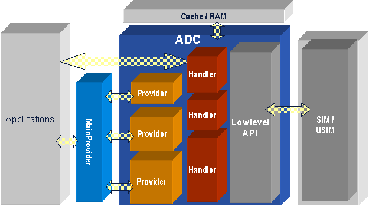

ADC Overview
1 Introduction
ADC (APOXI Data Control) component is described in this chapter. It is the APOXI subsystem which has access to SIM-data. It provides interface for accessing data which are stored in different mediums like SIM, RAM, etc. The ADC provides a generic C++ interface for APOXI and Reference MMI applications.
2 Overview
ADC is responsible for retrieving and manipulating structured data (e.g. phonebook) within APOXI. Also it offers the central point of storage of SIM/USIM. This kind of storage avoids data redundancy, ensure the consistency of SIM data, and helps to eliminate the consistency problems between applications.
ADC hides signal based access to SIM. All low-level calls (access to SIM) are implemented as non-blocking calls, which means that all messages and events received by applications are still processed i.e. message flow is not interrupted.
ADC is also capable of data caching. The use of data caching can massively increase the performance of applications. ADC uses generic data types, which means, all data input/output is done via “variant” data objects. These data objects are represented by the class DataItem.
3 Architecture
The architecture of ADC is given in the following figure (Figure 1).
 |
Figure 1. ADC Architecture
4 DataControl
DataControl is the singelton which represents the core ADC functionality.
4.1 Data access through Provider Interface
Providers are generic interfaces provided by ADC for presenting data. The entry point for using the ADC’s functionality is the class MainProvider. The MainProvider enables an application, through its interface, to access all Provider objects which are registered within the system. Providers can execute basic functionalities like Sorting, Filtering, and Finding.
Providers are used for retrieving data from the SIM/USIM. The SIM/USIM features of ADC are listed in the following:
4.2 Other Interfaces of DataControl
DataControl has some additional interfaces for retrieving certain states of the underlying SIM /USIM. It also have some complex methods for a more convenient direct access of data instead of using providers. These methods are used in some cases, where using providers are not so convenient. An example for such additional interfaces of DataControl is EONS - Enhanced Operators NameService.
4.3 Action Interfaces of DataControl
DataControl also provide some action interfaces. Examples for use cases of such interfaces are listed in the following: